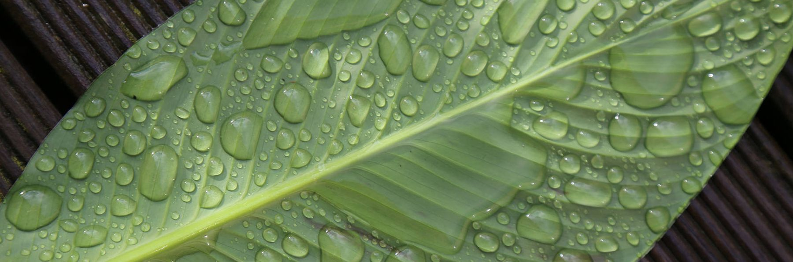

Personal Details
| Last Name: | Weingrill |
| First Name: | Jörg |
| Date of Birth | 1973 |
| Nationality | Austrian |
| Office Address | Leibniz-Institut für Astrophysik Potsdam (AIP) An der Sternwarte 16, 14482 Potsdam, Germany |
| Office Phone | +49 331 7499-456 |
| Office email: | jweingrill |
Scientific Career
| July 1st, 2012 - today | PostDoc Researcher at AIP |
| October 4th, 2011 | Ph.D. in Physics/Astrophysics with summa cum laude |
| 2008 - 2011 | Ph.D. Study of Physics/Astrophysics at the University of Graz |
| October 4th, 2007 | Magister in Physics/Astrophysics |
| June 2006 - 2012 |
Junior Scientist at the Space Research Institute, |
| 2002 - 2007 | Study of Physics/Astrophysics at the University of Graz |
Research Skills
- Languages: German (mother tongue), fluent English.
- Expert knowledge in data-reduction, data analysis and image-processing with Python.
- Extensive knowledge of the physics of extrasolar planets, especially models of transiting planets, stellar atmospheres and stellar activity.
- Programming ability in Python, CoDeSys, Java, Pascal, C/C++, SQL and PHP with 20 years experience as a software developer and IT manager.
- Expert knowledge of professional typesetting package LATEX.
- Expert knowledge in telescope optics, camera systems and robotic telescope systems.
- Advanced knowledge in Windows, Linux, Mac OSX and FreeBSD operating systems and virtualization with Citrix XenServer and XenApp.
- Basic knowledge in electronics.
Research community services
- Member of the International Astronomical Union
- Member of the Austrian Society for Astronomy and Astrophysics
- Member of the Styrian Astronomy Society
- Honoary member of the Astronomy Club Auersbachtal
Public outreach
- Venustransit 2004 Event in Graz in the frame of an ESO initiative
- Austrian Astronomy Day (2003-2012) at the Institute of Physics, University of Graz
- Space Weather Day 2007 at the Space Research Institute
- Exhibition International Heliophysical Year / Year of Astronomy 2009 at the Space Research Institute
- 100 hours of Astronomy 2009 at the Observatory Lustbühel